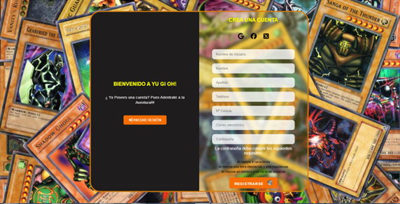
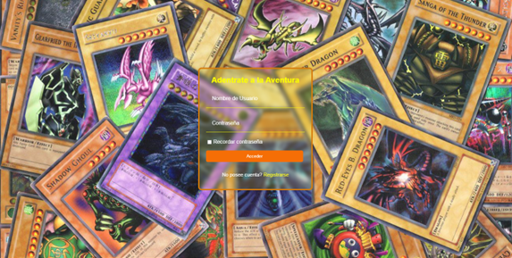
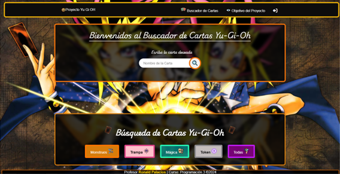
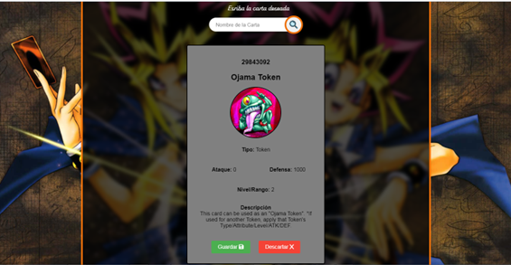
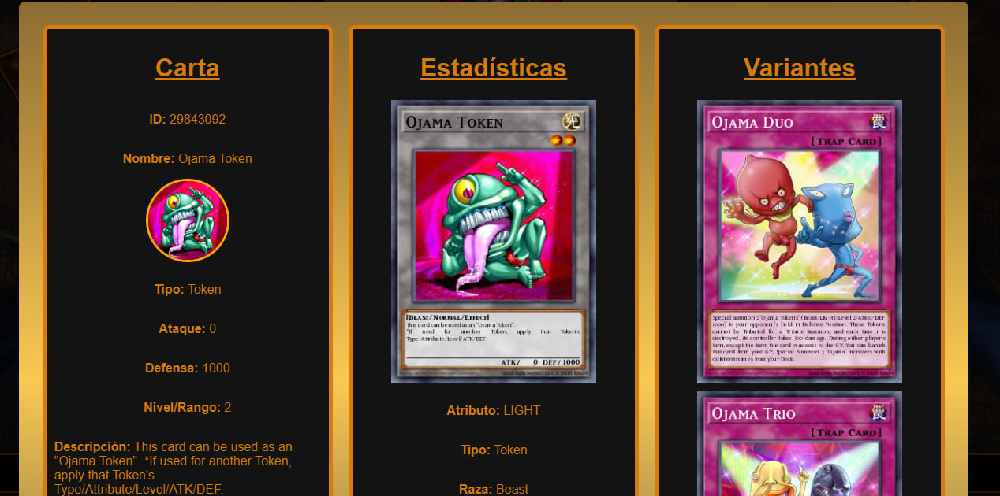
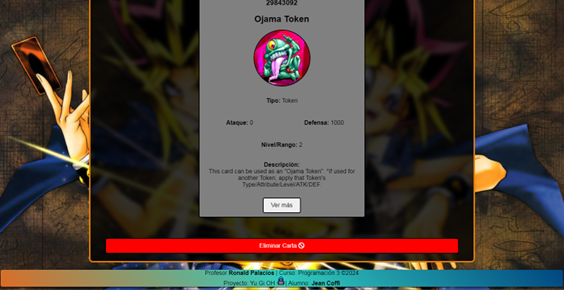

Proyecto Yu Gi OH Por Jean Coffi
Este proyecto tiene la finalidad de realizar la búsqueda de cartas en una Api de Gu-Yi-Oh. Las consultas realizas permiten obtener y visualizar los atributos de la carta, como imágenes, estadísticas, entre otras. El proyecto desarrollado permite buscar, almacenar y eliminar los datos de las cartas Yu-Gi-Oh, que están disponibles en la Api de Gu-Yi-Oh.
Para poder realizar la búsqueda de cartas, los usuarios deben registrarse en el sistema, incluyendo el nombre de usuario, nombre, apellido, teléfono, correo electrónico y la contraseña.

Una vez registrado en el sistema, el usuario puede acceder al mismo iniciando la sesión, para ello se solicita el nombre de usuario y la contraseña.

Cuando el usuario haya iniciado una sesión, podrá hacer la búsqueda de la carta deseada a través de su nombre.

Una vez encontrada la carta solicita aparecerá la información de esta, específicamente, el número que identifica la carta (Id), el nombre, tipo, ataque, defensa, nivel o rango y la descripción. La información mostrada varía de acuerdo al tipo de carta, es decir, si es tipo monstruo, carta tipo trampa, carta mágica o tipo token.

Cuando se muestra la carta buscada se tiene la opción de guardar o descartar. En el primer caso, se almacena la información de la carta en la base de datos IndexedDB, para que pueda ser consulta posteriormente; y en el segundo caso, no se almacena la información de la carta y se descarta de la pantalla.
Cabe destacar, que a la hora de guardar las cartas se hace siguiendo la estructura de cola, es decir, primero que entra primero que sale (FIFO).
El proyecto también cuenta con la opción de filtros para poder visualizar las cartas guardadas, ya sea por tipo de carta o si se desea visualizar todas aquellas que han sido almacenadas.
Una vez que se haga clic en alguno de los filtros se muestra la carta o las cartas que hayan sido almacenadas.
Cuando se muestran las cartas almacenadas se puede visualizar más detalles de las mismas, como estadísticas y variantes, al darle clic al botón “Ver Detalles”.

Finalmente, también se tiene la opción de eliminar las cartas almacenadas, cual se hace siguiendo la estructura FIFO.

Limitaciones:
- Se debe tener en cuenta que la Api contiene una gran cantidad de cartas con su respectiva información, por lo que el nombre debe ser exacto y en inglés, en caso contrario dará un mensaje de que no se encuentra la carta. No se logró hacer uso de una Api de traducción para contar con búsqueda en diferentes idiomas.
- Debido a que existen una infinidad de fusiones, las cuales dependen de diversos factores como los tipos de cartas, los efectos de las cartas y los tipos de invocación, se decidió trabajar con “Variantes”, las cuales se obtuvieron haciendo un filtro por el nombre de la carta. Específicamente, el nombre de la carta se busca en la descripción del resto de cartas, dado que la descripción indica las cartas necesarias para la creación de la variante en el caso que aplique.
- El proyecto no cuenta con un botón para ordenar los datos el método sort y la burbuja.
Notas:
Al darle click al boton ver detalles se tardara un poco ya que se accede en la API para buscar las variaciones de la carta
Se deben eliminar todas las DB de indexedDB para evitar errores en esta DB
Para ver Nombre de las cartas de la API: https://ygoprodeck.com/api-guide/